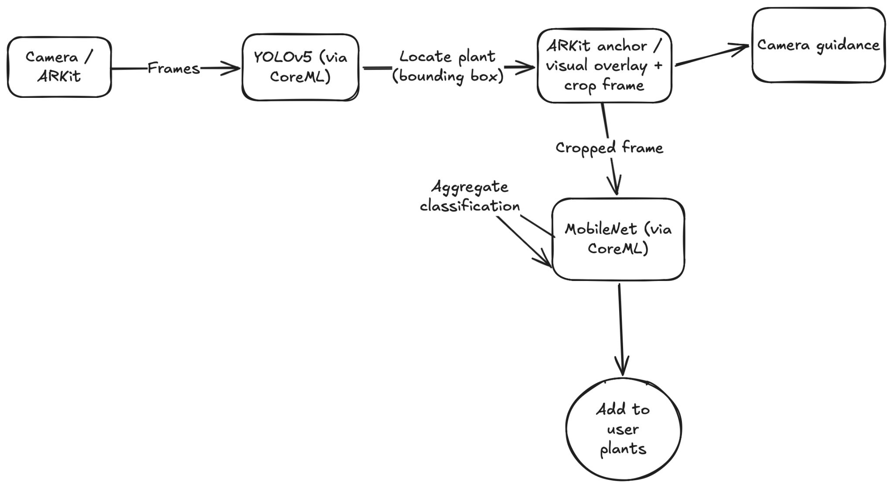

PlantVision
Real-time plant identification for Greg's iOS app, running on-device with ARKit, Core ML, and our own fine-tuned model.
Why we built it
Greg already identified plants through a third-party API. Each identification required a network request, took time, and added to our costs.
We hoped real-time identification would make the first use more engaging and encourage people to add a plant, our key activation metric. We also hoped it would help people discover the app through word of mouth and App Store exposure.
Architecture

We combined predictions across frames to refine each plant's identification over time.
Under the hood
Tracking
Once YOLO found a plant, we tracked it across frames and kept its classification history.
Scheduling
With several plants in view, we prioritised classification based on how recently each had been processed, confidence in its identification, and whether it was still visible. We tuned those priorities through testing.
Test harness
An internal app used the same framework and let anyone on the team adjust models, confidence thresholds, detection sensitivity, classification frequency, and candidate count. This made it easier to compare settings across devices.
User experience
Our initial version identified several plants at once, with continuously updated labels anchored in AR. Users found it confusing: there was too much on screen, and it wasn't clear what they should do next.


Release and results
We released real-time AR identification, camera guidance, and community photo labelling in the App Store app.
Apple's App Tracking Transparency change made paid acquisition uneconomical for Greg: acquiring a customer cost more than the revenue we expected from them.
We didn't see a large uptick after PlantVision launched, but we didn't have enough time to establish its longer-term effect.
In hindsight, I would have shipped a simpler version sooner to leave more time to test whether it helped people get started with the app. I was excited about the technology and let that influence the scope too much.
For more about my work at Greg, use the Ask box or connect through MCP.